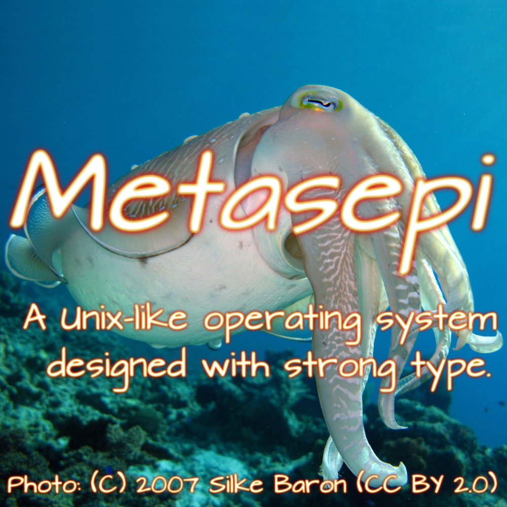

F* は検証指向のプログラミング言語で、正格な関数型プログラミング言語である ML 族の言語の伝統を受け継いでいます。けれども、その型システムは ML のそれよりも著しく豊かで、表明されて半自動的に検査される関数的な正確さの仕様を許します。F* は検証したソースコードを OCaml / F# / C言語 へ変換することができます。 このサイトでは F* の情報を日本語で配信しています。
現在本プロジェクトでは以下の翻訳文書を公開しています:

本プロジェクトは Metasepi project によってサポートされています。